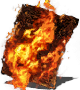
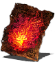
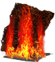
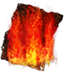
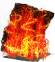
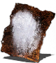
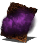
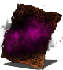

Piromancias para PvE (player vs everyone)
Ataques de Alto Daño (De un solo objetivo)
Gran Combustión – Rápida, con alto daño y bajo consumo de usos. Ideal contra jefes sin armadura pesada.

Bola de Fuego del Caos – Genera lava en el suelo, ideal para jefes grandes o enemigos estáticos.

Control de Masas y Multitud
Tormenta de Fuego – Excelente para jefes grandes como los Demonios o grupos de enemigos.

Tempestad de fuego – Más fuerte que Tormenta de Fuego, pero con menos usos. Devastador en espacios cerrados.

Tormenta del Caos – Similar a Tormenta de Fuego, pero deja lava en el suelo, lo que la hace aún mejor en PvE.

Supervivencia y Soporte
Sudor Fiero – Reduce el daño de fuego, útil contra jefes como los Demonios o en Izalith.

Niebla Venenosa – Envenena enemigos a distancia, útil en ciertas áreas para evitar enfrentamientos directos.

Niebla Tóxica – Similar a Niebla Venenosa, pero con toxicidad, muy efectiva en PvE para jefes susceptibles como Dragón Boquiabierto.
